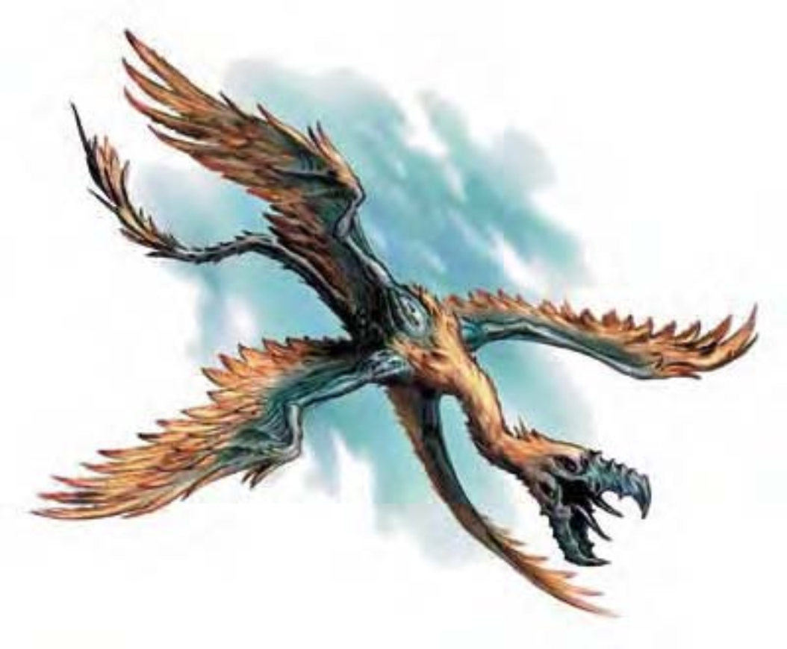

该生物拥有弯曲似蛇的躯体、长脖子与长尾巴。两对羽毛翅膀向外伸展，一对在上，一对在下。躯体大部分覆盖着光泽灿烂的蓝色鳞片，脖子与尾巴根部各有一撮黄羽毛。头部长着锯齿状的黑喙与四只眼睛，眼睛一对在喙上方，一对在下方。
箭鹰是来自风元素界的掠食者与觅食者。箭鹰是登峰造极的飞行者，一生乘风而行。活着的箭鹰永远都在移动，一孵化就有飞行能力。无论进食、睡眠、交配，箭鹰都不用触地。通过扭动身躯与改变翅膀拍击方式，箭鹰可以往任何方向全速飞行。箭鹰蛋天生具有浮空能力。母箭鹰一次可在空中下2d4颗蛋，之后这些蛋便飘浮空中直到孵化。若风把蛋吹散，母箭鹰会把蛋收集回来保护。除此之外，母箭鹰并不会理会蛋。
青年箭鹰（1至10岁）从喙到尾约5英尺长，躯体约占三分之一。翼展约7英尺宽，约20磅重。成年箭鹰（11至40岁）从喙到尾约10英尺长，翼展约15英尺宽，约100磅重。长老箭鹰（41至75岁）从喙到尾约20英尺长，翼展约30英尺宽，约800磅重。箭鹰说风族语，但通常不多话。
战斗箭鹰是领域性强的生物，总是处于饥饿状态。他们多半会攻击任何遇上的生物，也许是为了尝试饱餐一顿；或者是为了驱赶可能的竞争对手。箭鹰的主要攻击模式是由尾巴发射电击射线。箭鹰也可进行啮咬攻击，但还是倾向与对手保持距离。
电击射线（超自然）：箭鹰每轮可发射1次射线，距离50英尺。
| 资料栏位 | 青年箭鹰 小型异界生物（风系、外界） |
成年箭鹰 中型异界生物（风系、外界） |
长老箭鹰 大型异界生物（风系、外界） |
|---|---|---|---|
| 生命骰 | 3d8+3 (16HP) | 7d8+7 (38HP) | 15d8+45 (112HP) |
| 先攻 | +5 | +5 | +5 |
| 速度 | 飞行60英尺 (灵活) (12格) | 飞行60英尺 (灵活) (12格) | 飞行60英尺 (灵活) (12格) |
| 防御等级 | 20 (+1体型、+5敏捷、+4天生)、接触16、措手不及15 | 21 (+5敏捷、+6天生)、接触15、措手不及16 | 22 (-1体型、+5敏捷、+8天生)、接触14、措手不及17 |
| 基本攻击/擒抱 | +3 / +0 | +7 / +9 | +15 / +25 |
| 攻击 | 电击射线+9远程接触 (2d6)；或啮咬+9近战 (1d6+1) | 电击射线+12远程接触 (2d8)；或啮咬+12近战 (1d8+3) | 电击射线+19远程接触 (2d8)；或啮咬+21近战 (2d6+9) |
| 全力攻击 | 电击射线+9远程接触 (2d6)；或啮咬+9近战 (1d6+1) | 电击射线+12远程接触 (2d8)；或啮咬+12近战 (1d8+3) | 电击射线+19远程接触 (2d8)；或啮咬+20近战 (2d6+9) |
| 占用/触及 | 5英尺/5英尺 | 5英尺/5英尺 | 10英尺/5英尺 |
| 特殊攻击 | 电击射线 | 电击射线 | 电击射线 |
| 特殊能力 | 黑暗视觉60英尺、对强酸、电击、毒素免疫、寒冷抗力10、火焰抗力10 | 黑暗视觉60英尺、对强酸、电击、毒素免疫、寒冷抗力10、火焰抗力10 | 黑暗视觉60英尺、对强酸、电击、毒素免疫、寒冷抗力10、火焰抗力10 |
| 豁免 | 强韧+4、反射+8、意志+4 | 强韧+6、反射+10、意志+6 | 强韧+12、反射+14、意志+10 |
| 属性 | 力量12、敏捷21、体质12、智力10、感知13、魅力13 | 力量14、敏捷21、体质12、智力10、感知13、魅力13 | 力量22、敏捷21、体质16、智力10、感知13、魅力13 |
| 技能 | 交涉+3、脱逃+11、界域知识+6、聆听+7、潜行+11、搜索+6、察言观色+7、侦察+7、生存+7 (追踪+9、+9风元素界)、绳技+5 (捆绑+7) | 交涉+3、脱逃+15、界域知识+10、聆听+11、潜行+15、搜索+10、察言观色+11、侦察+11、生存+11 (追踪+13、+13风元素界)、绳技+5 (捆绑+7) | 交涉+3、脱逃+23、界域知识+18、聆听+21、潜行+23、搜索+18、察言观色+19、侦察+21、生存+19 (追踪+21、+21风元素界)、绳技+5 (捆绑+7) |
| 专长 | 闪避、武器娴熟 | 闪避、空袭、武器娴熟 | 警觉、盲战、战斗反射、闪避、空袭、武器娴熟、专攻武器 (啮咬) B |
| 环境 | 风元素界 | 风元素界 | 风元素界 |
| 组织 | 单独或数尾 (2-4) | 单独或数尾 (2-4) | 单独或数尾 (2-4) |
| 挑战级数 | 3 | 5 | 8 |
| 宝藏 | 无 | 无 | 无 |
| 阵营 | 总是绝对中立 | 总是绝对中立 | 总是绝对中立 |
| 进化 | 4-6HD (小型) | 8-14HD (中型) | 16-24HD (大型) ; 25-32HD (巨型) |
| 等级修正值 | ― | ― | ― |